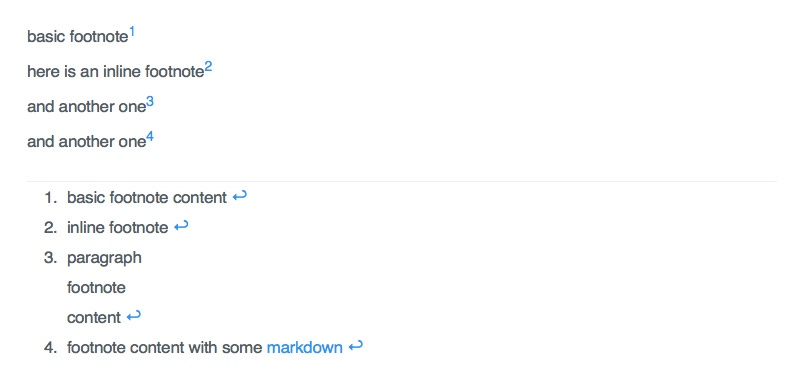
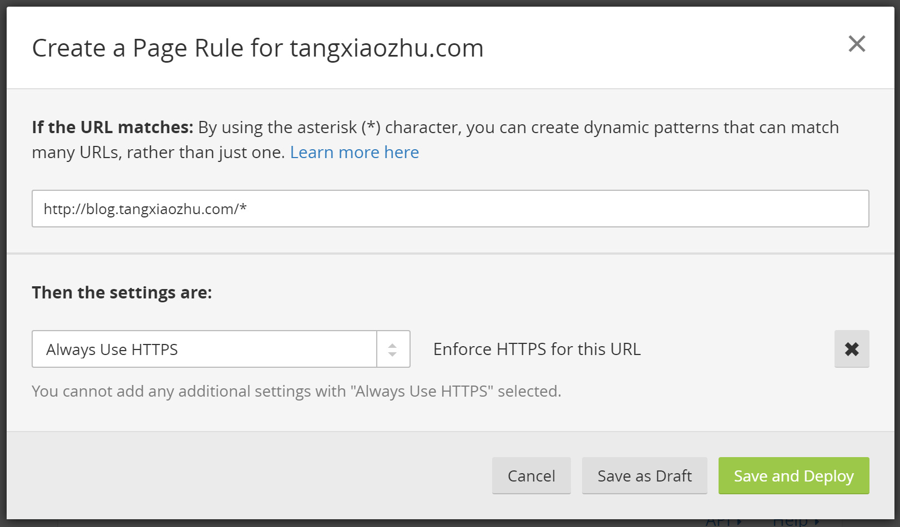
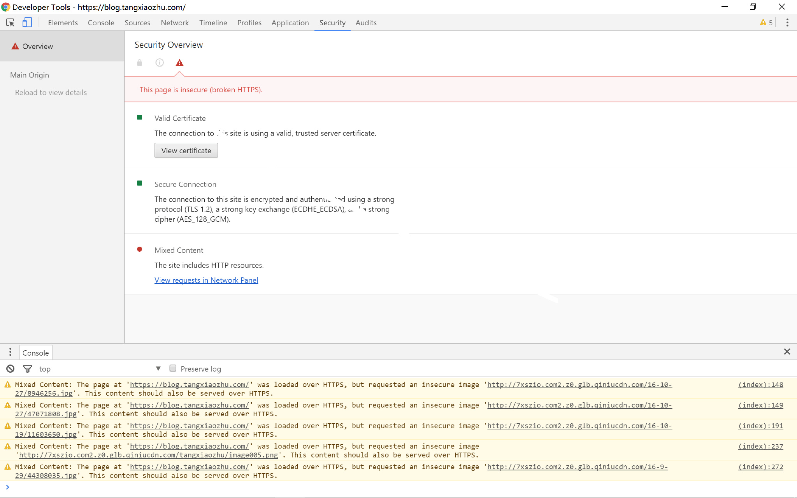

由于操作失误出现未知错误，不得不重新来过，同时也萌发写教程的打算。关于 Hexo 建立博客的文章数不胜数，本文只是简要介绍这点，重点是深度优化与定制部分。
移除：卸载 Git 和 Node 后，删除所有博客文件即为移除。如果遭遇文件夹无法删除的情况，使用命令 rd/s/q 可强制删除。
安装：利用基于 Node.js 的 Hexo 可以快速搭建一个博客网站。搭建前必须安装 Node.js 和 Git。Node.js 是一款开源且跨平台的服务器端和网络应用，使用 JavaScript 开发。Git 是一款免费、开源的分布式版本控制系统。安装过程中全点下一步即可。之后，请参照 官方中文文档 进行 Hexo 的安装。
网站初始化：在指定文件夹初始化网站文件。在你想存储网站文件的文件夹中，鼠标右键后，打开 Git Bash Here，然后输入 hexo init blog，blog 是文件名，可任意取。成功后会出现 INFO Start blogging with Hexo! 提示信息。Windows 用户由于自带的记事本简陋难用，故建议安装 Notepad++ 以编辑 .yml 文件。
主题：在此建议使用最受欢迎的 NexT 主题，参照其 官方文档 可轻易完成配置。安装插件的命令要在博客根目录下执行。
深度优化
文章链接唯一化
也许你会数次更改文章题目或者变更文章发布时间，在默认设置下，文章链接都会改变，不利于搜索引擎收录，也不利于分享。唯一永久链接才是更好的选择。安装此插件后，不要在 hexo s 模式下更改文章文件名，否则文章将成空白。
npm install hexo-abbrlink --save
在 站点配置文件 中查找代码 permalink:，将其更改为:
permalink: posts/:abbrlink/ # “posts/” 可自行更换
在 站点配置文件 中添加如下代码：
# abbrlink config
abbrlink:
alg: crc32 # 算法：crc16(default) and crc32
rep: hex # 进制：dec(default) and hex
可参照样例以选择：
crc16 & hex
https://post.zz173.com/posts/66c8.html
crc16 & dec
https://post.zz173.com/posts/65535.html
crc32 & hex
https://post.zz173.com/posts/8ddf18fb.html
crc32 & dec
https://post.zz173.com/posts/1690090958.html
语法优化
引用
默认的语法无法添加角标（footnotes）以注明引用，这种可来回跳转的引用还是挺有用处的。
npm install hexo-footnotes --save
安装完毕请确认是否生效，如不生效，在 站点配置文件 中添加如下代码以手动启用：
plugins:
- hexo-footnotes

折叠代码或文字
<head> 后添加一下代码：
<script>
function ishidden(odiv){
var vdiv = document.getElementById(odiv);
vdiv.style.display = (vdiv.style.display == 'none')?'block':'none';
}
</script>
<div onclick="ishidden('X')">点击此处展开内容</div>
<div id="X" style="display:none;">需要折叠的代码或文字放在这里</div>
X 为标记，任意设置，在同一文章中，各不相同即可。
搜索引擎优化
我在简书同步发布文章，搜索结果里简书排在首位，我的独立博客可能找不到，必须要进行 SEO 优化。
添加网站地图
npm install hexo-generator-sitemap --save
npm install hexo-generator-baidu-sitemap --save
在 站点配置文件 中添加如下代码。
# hexo sitemap
sitemap:
path: sitemap.xml
baidusitemap:
path: baidusitemap.xml
配置成功后，会生成 sitemap.xml 和 baidusitemap.xml，前者适合提交给谷歌搜素引擎，后者适合提交百度搜索引擎。其次，在 robots.txt 中添加下面的一段代码：
Sitemap: http://blog.tangxiaozhu.com/sitemap.xml
Sitemap: http://blog.tangxiaozhu.com/baidusitemap.xml
添加蜘蛛协议
robots.txt 放置在 \source 目录下。
#hexo robots.txt
User-agent: *
Allow: /
Allow: /archives/
Disallow: /vendors/
Disallow: /js/
Disallow: /css/
Disallow: /fonts/
Disallow: /vendors/
Disallow: /fancybox/
Sitemap: http://blog.tangxiaozhu.com/search.xml
Sitemap: http://blog.tangxiaozhu.com/sitemap.xml
Sitemap: http://blog.tangxiaozhu.com/baidusitemap.xml
此协议内容上与其他相比，增加了 Sitemap: http://blog.tangxiaozhu.com/search.xml，当然我也忘了为何增加。
限制出站链接
网络爬虫会在当前页面搜索所有的链接，故有可能跳到别的网站。nofollow 标签是由谷歌领头创新的一个 “反垃圾链接” 的标签，并被各大搜索引擎广泛支持，引用 nofollow 标签的目的是：用于指示搜索引擎不要追踪（即抓取）网页上的带有 nofollow 属性的任何出站链接，以减少垃圾链接的分散网站权重。
npm install hexo-autonofollow --save
在 站点配置文件 中添加如下代码。
nofollow:
enable: true
exclude: # 例外的链接，可将友情链接放置此处
- exclude1.com
- exclude2.com
主动推送新链接
解决百度爬虫被禁止访问的问题，提升网站收录质量和速度。
npm install hexo-baidu-url-submit --save
在 站点配置文件 中添加如下代码。
baidu_url_submit:
count: 5 ## 比如3，代表提交最新的三个链接
host: blog.tangxiaozhu.com ## 在百度站长平台中注册的域名
token: ## 请注意这是您的秘钥， 请不要发布在公众仓库里!
path: baidu_urls.txt ## 文本文档的地址， 新链接会保存在此文本文档里
启用 https
注册 CloudFlare，然后添加网站地址（顶级域名），会提示将 DNS 换为：
charles.ns.cloudflare.com
ivy.ns.cloudflare.com
DNSPod 等不能与 CloudFlare 混用，为减少麻烦，一次使用一个 Name Server 比较好。此时等待一段时间 Overview 中状态会变为 Active。然后在 Page Rules 中设置总是使用 https，如图所示。

但是在搞定以后，却无法变成小绿锁，因为七牛的图床外链是 http，似乎收费或者绑定自定义域名并备案才可以申请使用 https，新浪微博图床 支持返回 https 安全协议的图片地址。但最终我又用回 http，因为不确认微博图床的可靠性，然后最好清除下浏览器缓存。

加速国内访问
同时部署到 Coding.net，在 DnsPod 设置默认访问 you.coding.me，国外访问 you.github.io即可。
深度定制
也许只适用于 NexT 主题，而深度优化是通用的。所有内容是 NexT 主题 官方文档 所没有的。
每篇文章后面加文字
layout/_macro/post.swig 修改：
{{ post.content }}
{% endif %}
{% endif %}
{% else %}
{{ post.content }}
# 大家好，这里是 NexT 主题下的文章内容底部位置
# 既然来啦，写点什么这里吧，写上去，所有文章底部都看到哦
{% endif %}
修改链接文字样式
将链接文本设置为蓝色，鼠标划过时文字颜色加深，并显示下划线。
themes\next\source\css\_common\components\post\post.styl 添加以下代码：
.post-body p a{
color: #0593d3;
border-bottom: none;
&:hover {
color: #0477ab;
text-decoration: underline;
}
}
选择 .post-body 是为了不影响标题，选择 p 是为了不影响首页“阅读全文”的显示样式。
参考：http://www.wuxubj.cn/2016/08/Hexo-nexT-build-personal-blog/
目录默认全展开
~/themes/next/source/css/_custom/custom.styl 中添加以下代码：
.post-toc .nav .nav-child { display: block; }
这样会导致目录太长，以至于在一个页面中无法全部显示。不过并不会影响阅读体验。
删除上下篇按钮
themes\next\layout\_macro\post
rel="tag">#{{ tag.name }}</a>
{% endfor %}
</div>
{% endif %}
删除开始 {% if not is_index and (post.prev or post.next) and not navlessPost %}
<div class="post-nav">
<div class="post-nav-next post-nav-item">
{% if post.next %}
<a href="{{ url_for(post.next.path) }}" rel="next" title="{{ post.next.title }}">
<i class="fa fa-chevron-left"></i> {{ post.next.title }}
</a>
{% endif %}
</div>
<div class="post-nav-prev post-nav-item">
{% if post.prev %}
<a href="{{ url_for(post.prev.path) }}" rel="prev" title="{{ post.prev.title }}">
{{post.prev.title}} <i class="fa fa-chevron-right"></i>
</a>
{% endif %}
</div>
</div>
结束 {% endif %}
</div>
注意：利用最上方的代码可以定位，如果后悔可再添加删除的代码。
修改授权协议图标
在 授权协议官网 下载想要的矢量图片，替换即可。
添加其他分享
添加跟我博客同样的分享条，请看 官方文档，具体的操作方式请看 Magicer 的教程。
<!--MOB SHARE BEGIN-->
<div class="-mob-share-ui-button -mob-share-open">分享</div>
<div class="-mob-share-ui" style="display: none">
<ul class="-mob-share-list">
<li class="-mob-share-weibo"><p>新浪微博</p></li>
<li class="-mob-share-tencentweibo"><p>腾讯微博</p></li>
<li class="-mob-share-qzone"><p>QQ空间</p></li>
<li class="-mob-share-qq"><p>QQ好友</p></li>
<li class="-mob-share-renren"><p>人人网</p></li>
<li class="-mob-share-kaixin"><p>开心网</p></li>
<li class="-mob-share-douban"><p>豆瓣</p></li>
<li class="-mob-share-facebook"><p>Facebook</p></li>
<li class="-mob-share-twitter"><p>Twitter</p></li>
</ul>
<div class="-mob-share-close">取消</div>
</div>
<div class="-mob-share-ui-bg"></div>
<script id="-mob-share" src="http://f1.webshare.mob.com/code/mob-share.js?appkey=你的appkey"></script>
<!--MOB SHARE END-->
注意 appkey 要修改为自己的。
一键图床
适用于两种平台的免费软件，可以一键上传图片到七牛等服务器，同时获取外链。没有提供自动压缩功能实在遗憾，可惜我又不会编程。
- macOS 平台：U 图床 & PhotoCloud & iPic
- Windows 平台：MPic
错误信息
LF will be replaced
Windows 提交命令的时候出现 warning: LF will be replaced by CRLF in XXXXXXXXXXXXXX 的警告。输入命令：
git config --global core.autocrlf false
无法生成 html
输入Hexo g 后没有生成 html 文件，此时只需将根目录下 package.json 中 dependencies 的所有项都添加 站点配置文件 的 plugins 下。网上并没有相应的解决办法，知乎上也有提问却并没有回答，我也是不断试错，最后明白有时候手动启用插件才是正途。比如：
plugins:
- hexo
- hexo-abbrlink
- hexo-baidu-url-submit
- hexo-deployer-git
- hexo-footnotes
- hexo-generator-archive
- hexo-generator-baidu-sitemap
- hexo-generator-category
- hexo-generator-feed
- hexo-generator-index
- hexo-generator-searchdb
- hexo-generator-sitemap
- hexo-generator-tag
- hexo-renderer-ejs
- hexo-renderer-marked
- hexo-renderer-stylus
- hexo-server
题外话
标题优化
将标题、关键字、描述连在一起，固然有利于 SEO 但并不美观，故我拒绝。
为何要使用图床
GitHub 建议 Pages 网站总量不要超过 1 GB，如果超过会发送邮件要求缩减体积，只是你也可以无视这个提醒，但过度使用的话一定会被限制的。GitHub 提供每月 100 GB 的流量。从这个角度来看，使用 GitHub 本身作为图床确实没问题，也即将图片放在 source 下再引用是完全可行的。甚至有人利用 GitHub 开发图床服务。
然而还要考虑这些问题。首先，国内与 GitHub 的连接是比较缓慢的，故会减缓网站访问速度和增加部署时间；其次，总量越来越大，如果网络是计流量的话将难以承担。